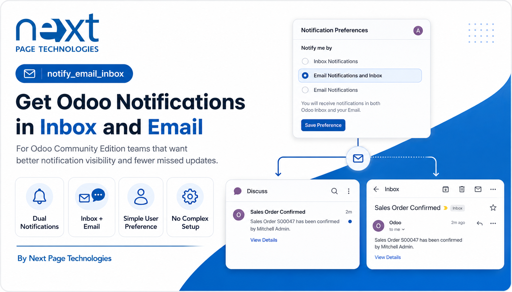
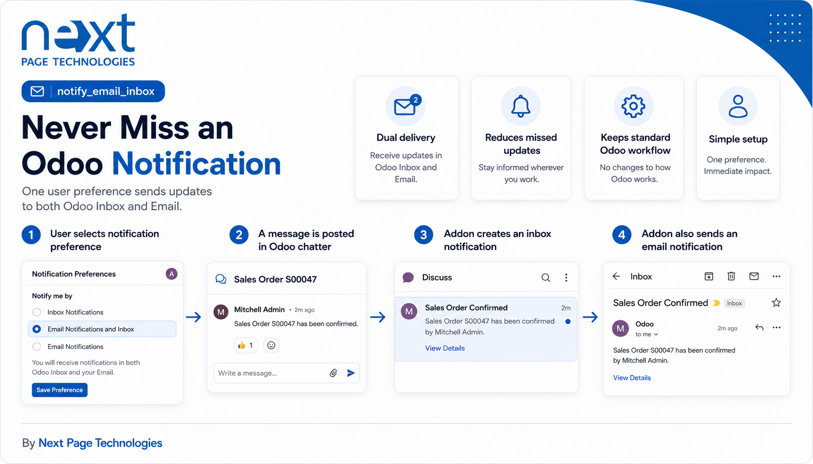
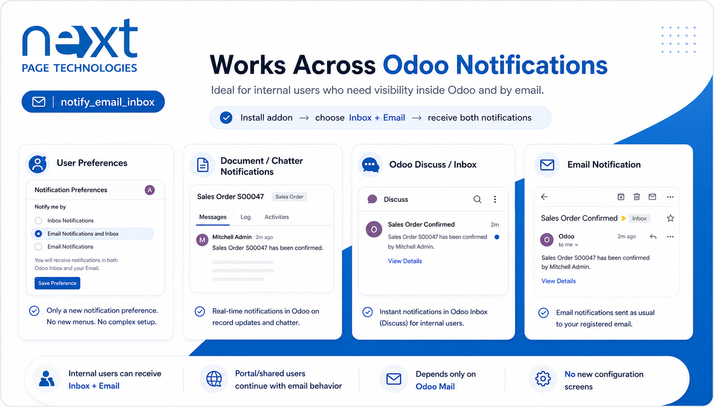
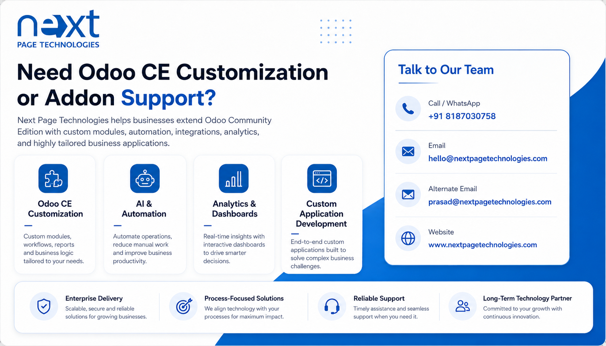

Odoo Discuss and Mail
User Notifications by Email and Odoo adds a combined notification preference for Odoo users. When selected, supported Odoo Mail notifications are delivered through both email and the Odoo inbox, helping users keep inbox visibility while still receiving email alerts.
This addon extends the standard user notification type selection with an additional `email_inbox` option. It preserves the inbox notification group behavior for users with this preference and splits matching notification recipients into separate inbox and email delivery flows.
Adds a user notification option for combined email and Odoo inbox handling.
Sends matching notifications through Odoo's existing inbox notification flow.
Sends matching notifications through Odoo's existing email notification flow.
Keeps the Odoo inbox notification group aligned for inbox and combined email plus inbox users.
No separate configuration menu is added by this addon. After installation, administrators can select the combined email and inbox notification preference on user records. Portal or shared users are kept aligned with Odoo's standard email notification behavior.
The addon adds a notification preference that keeps Odoo inbox behavior available while also allowing email delivery for supported notifications.

During notification processing, recipients using the combined option are copied into inbox delivery data and email delivery data so both channels are used.

This addon changes Odoo Mail notification handling for users with the combined email and inbox preference. It does not add a new Discuss application screen, activity workflow, or external notification service.
Next Page Technologies Pvt Ltd
https://nextpagetechnologies.com

Next Page Technologies Pvt Ltd
https://nextpagetechnologies.com